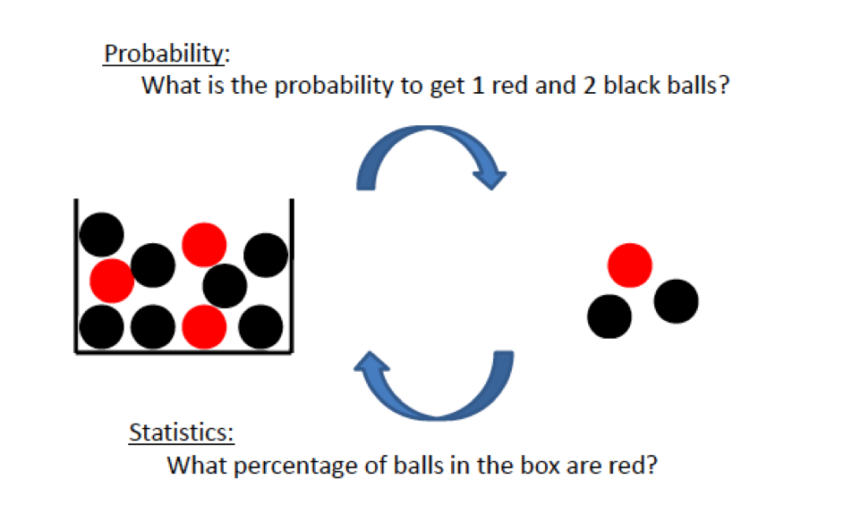

Introduction to Probability Models
Lecture 32
Qi Wang, Department of Statistics
Nov 7, 2018
Probability VS Statistics
- Probabilityis the science which studies likeliness of future event is based on the underlying model or population or process
- Statistics is the science of collecting, analyzing, presenting, and interpreting data

Concepts
- Dataset:all the data collected in a particular study
- Elements:the individual entities of a data set
- Variable:a character of interest for the elements
- Observation:the set of measurements obtained for a particular element
Types of Variables
- Qualitative Variable: has names or labels used to identify an attribute of an element, also called categorical.
Scale of measurement is
- Nomial: ranking or order is meaningless (e.g. color)
- Ordinal: inherent rank or order to the data (e.g. income categories)
- Quantitative Variable: has numeric values that indicates how much or how many of something.
Scale of measurement in
- Interval: difference of quantities are meaningful, ratios of quantities cannot be compared (e.g. temperature in degrees Fahrenheit)
- Ratio: ratios of quantities are meaningful (e.g. length)
Example 1
The table shows a data set.
| Year |
Major |
GPA |
Total Credit Hours |
| Sophomore |
Psychology |
3.14 |
42 |
| Senior |
Accounting |
3.45 |
105 |
| Senior |
Philosophy |
3.06 |
111 |
| Freshman |
Statistics |
2.89 |
17 |
| Sophomore |
Spanish |
3.25 |
38 |
| Junior |
Accounting |
2.95 |
79 |
- How many elements are in the data set?
- How many variables are in the data set?
- What is the $4_{th}$ observation in the data set?
- What type of variable is each variable in the data set?
Example 2
State the type of variable for each
- Smoking status
- Income
- IQ
- Level of satisfaction
- T-shirt size (S, M, L, XL)
- Score on the Mathematics portion of the SAT
Types of Data
Based on how the data were collected
- Cross-sectional data: collected at the same point (or approximately the same point) in time
- Time series data: collected over several time periods
Example 3
State whether the data for variable is cross-sectional or time series.
- Current GPAs of Sophomore Management students
- Your GPA during your time at Purdue
- Daily closing price of a stock for month of March
- Value of the stocks in the Dow Jones Industrial Average on March 31, 2016
- Bushels of corn harvested in each of Indiana’s counties in 2015.
- Score on the Mathematics portion of the SAT
Measures of Center
- Mean: arithmetic average
$$\bar{x} = \frac{x_1 + x_2 + \cdots + x_n}{n} = \frac{1}{n}\sum_{i}^n x_i$$
Example: 1, 2, 2, 3, 4, 7, 9
-
Mode: most frequent value in a dataset
Example: 2 is the mode in the previous example
-
Median: midpoint of the data such that half of the values are smaller and half of the values are larger.
How to Find a Median
- Arrange the data in increasing order(from the smallest to the largest)
- Count the number of observations, n.
- If n is odd, median is the middle ordered value:
$M = (\frac{n + 1}{2})_{th}$ ordered value
- If n is even, median is the average of two middle ordered value:
$M$ = average of $(\frac{n}{2})_{th}$ and $(\frac{n}{2} + 1)_{th}$ ordered value